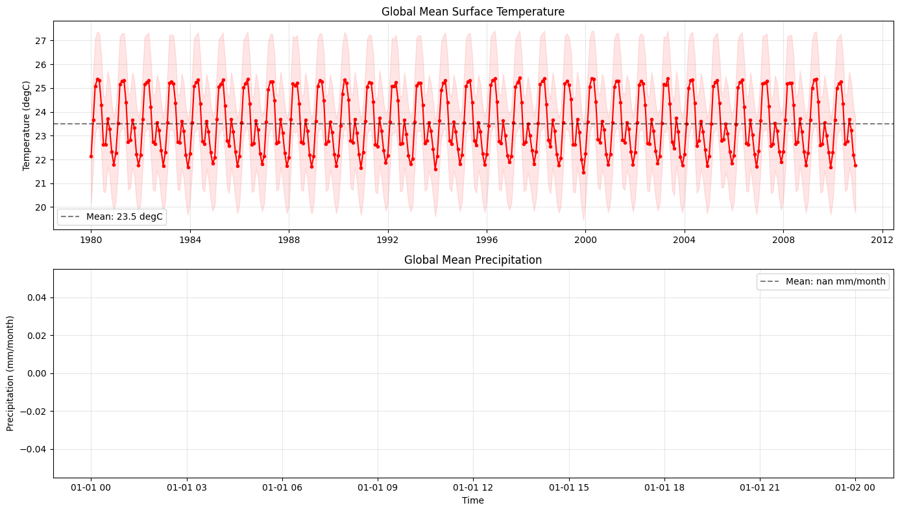
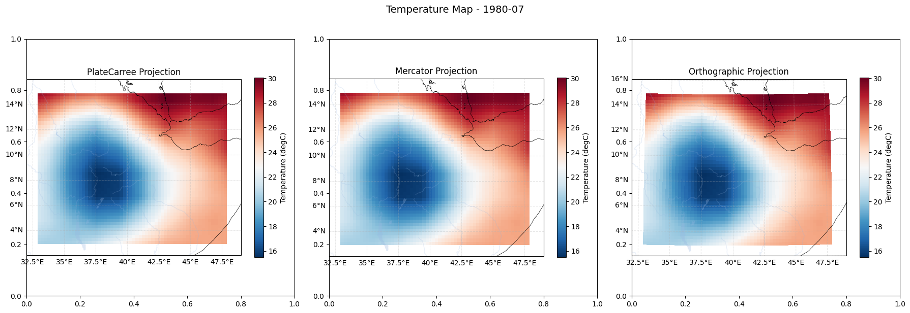
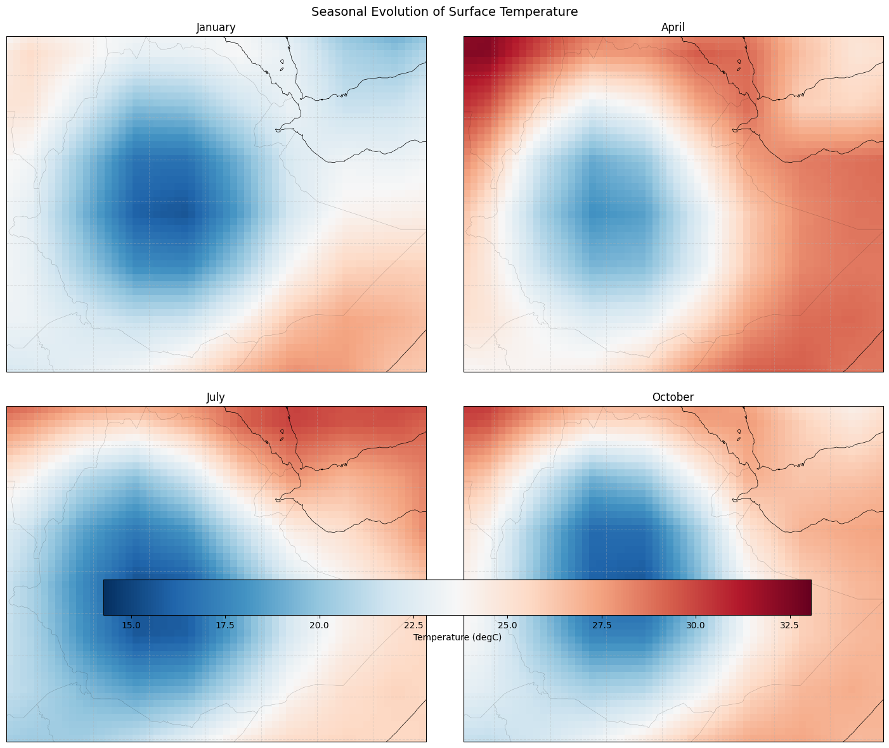
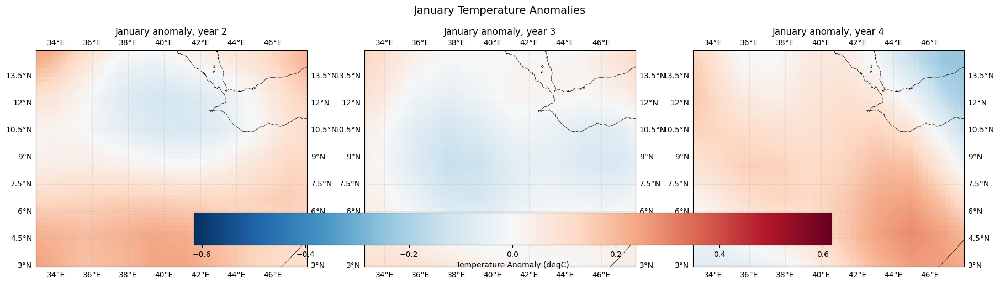
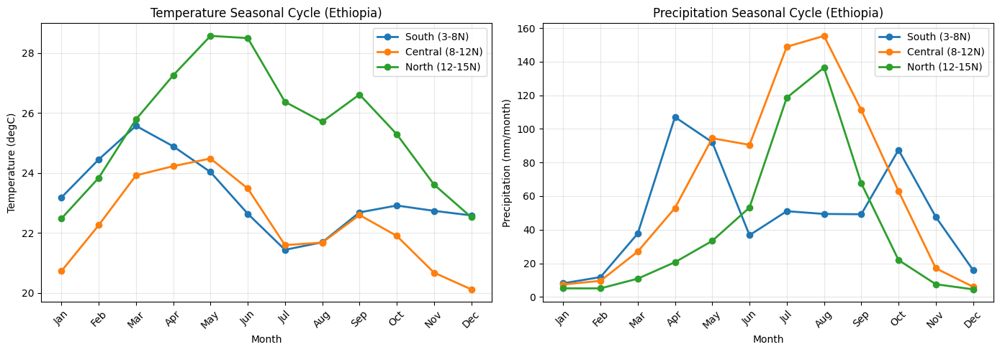
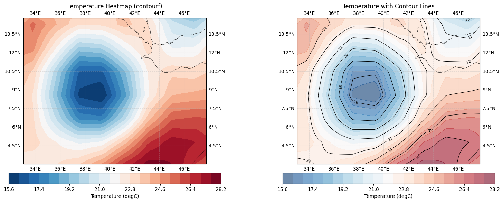
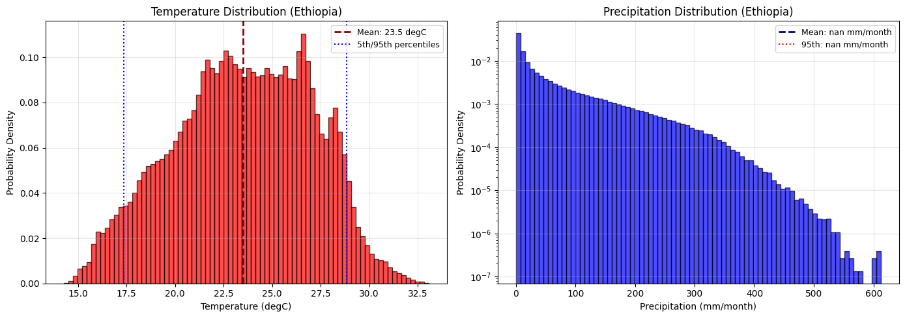
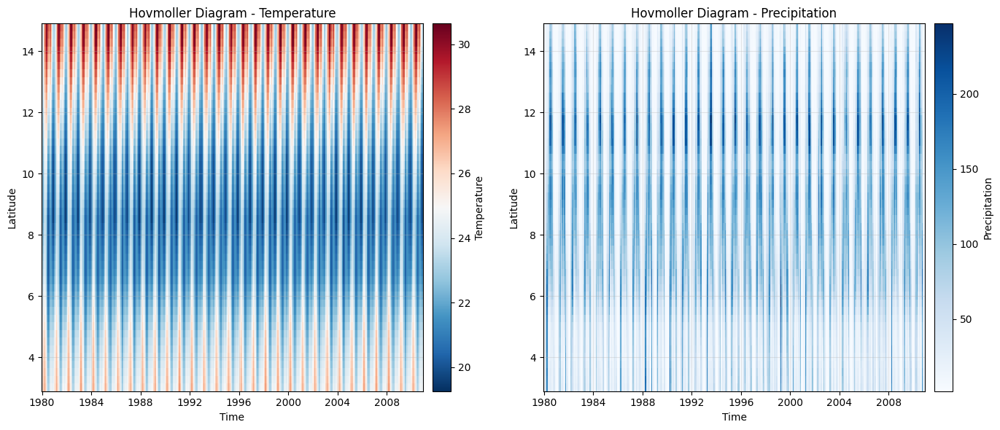
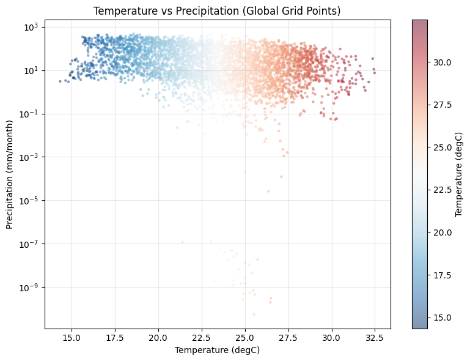
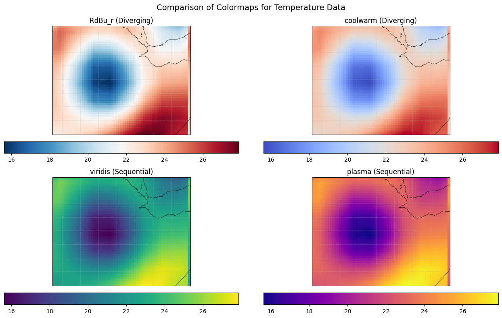

Climate Data Visualization#
Visualizing Climate Data with Python#
Effective visualization is essential for understanding climate data. This notebook covers various plotting techniques using matplotlib and cartopy for climate data exploration and communication.
Learning Objectives:#
Create time series plots for climate variables
Generate spatial maps with different cartopy projections
Design multi-panel figure layouts
Produce anomaly maps, seasonal cycle plots, and histograms
Use appropriate color schemes for climate data
import subprocess
import xarray as xr
import numpy as np
import matplotlib.pyplot as plt
import matplotlib.colors as mcolors
import cartopy.crs as ccrs
import cartopy.feature as cfeature
from cartopy.util import add_cyclic_point
import os
# CDO is installed as cdo.cmd on Windows; use the right executable name.
CDO = 'cdo.cmd' if os.name == 'nt' else 'cdo'
# Use real data: NCEP/DOE temperature regridded onto the CHIRPS Ethiopia grid
data_dir = '../data'
os.makedirs(data_dir, exist_ok=True)
tas_file = os.path.join('..', 'datasets', 'tas_sample.nc')
pr_file = os.path.join('..', 'datasets', 'pr_sample.nc')
ds_pr_real = xr.open_dataset(pr_file)
# Coarsen the real CHIRPS grid so plotting stays fast
ds_pr_real = ds_pr_real.isel(latitude=slice(0, None, 5), longitude=slice(0, None, 5))
ds_tas_real = xr.open_dataset(tas_file)
# Interpolate the real reanalysis temperature onto the real CHIRPS grid
tas_on_pr = ds_tas_real.tas.interp(lat=ds_pr_real.latitude, lon=ds_pr_real.longitude)
ds = xr.Dataset(
{
'temperature': (['time', 'latitude', 'longitude'],
(tas_on_pr - 273.15).values,
{'units': 'degC', 'long_name': 'Surface temperature'}),
'precipitation': (['time', 'latitude', 'longitude'],
ds_pr_real.pr.values,
{'units': 'mm/month', 'long_name': 'Precipitation'}),
},
coords={'time': ds_pr_real.time.values,
'latitude': ds_pr_real.latitude.values,
'longitude': ds_pr_real.longitude.values}
)
ds = ds.rename({'latitude': 'lat', 'longitude': 'lon'})
ds.attrs = {'title': 'Real reanalysis temperature + CHIRPS precipitation',
'source': 'NCEP/DOE Reanalysis-2 + CHIRPS'}
lat = ds.lat.values
lon = ds.lon.values
vis_file = os.path.join(data_dir, 'real_visualization_data.nc')
ds.to_netcdf(vis_file)
print(f'Using real datasets: {tas_file}, {pr_file}')
print(f'Dimensions: {len(ds.lon)} lon x {len(ds.lat)} lat x {len(ds.time)} time')
print(ds)
C:\Users\birhe\AppData\Roaming\Python\Python312\site-packages\xarray\backends\plugins.py:110: RuntimeWarning: Engine 'xrspatial' loading failed:
Numba needs NumPy 2.4 or less. Got NumPy 2.5.
external_backend_entrypoints = backends_dict_from_pkg(entrypoints_unique)
Using real datasets: ..\datasets\tas_sample.nc, ..\datasets\pr_sample.nc
Dimensions: 60 lon x 48 lat x 372 time
<xarray.Dataset> Size: 13MB
Dimensions: (time: 372, lat: 48, lon: 60)
Coordinates:
* time (time) datetime64[ns] 3kB 1980-01-01 ... 2010-12-01
* lat (lat) float32 192B 3.025 3.275 3.525 ... 14.27 14.52 14.77
* lon (lon) float32 240B 33.02 33.27 33.52 ... 47.27 47.52 47.77
Data variables:
temperature (time, lat, lon) float64 9MB 22.25 22.3 22.34 ... 20.51 20.75
precipitation (time, lat, lon) float32 4MB 5.609 4.555 ... 9.018 8.735
Attributes:
title: Real reanalysis temperature + CHIRPS precipitation
source: NCEP/DOE Reanalysis-2 + CHIRPS
# Time series plotting (matplotlib)
# Compute global mean for each variable
# Manual area-weighted mean
lat_rad = np.deg2rad(ds.lat.values)
weights = np.broadcast_to(np.cos(lat_rad)[:, np.newaxis], (len(lat), len(lon)))
global_temp = ds.temperature.values
global_precip = ds.precipitation.values
ts_temp = np.average(global_temp, weights=weights / weights.sum(), axis=(-2, -1))
ts_precip = np.average(global_precip, weights=weights / weights.sum(), axis=(-2, -1))
fig, axes = plt.subplots(2, 1, figsize=(14, 8))
axes[0].plot(ds.time, ts_temp, color='red', linewidth=1.5, marker='o', markersize=3)
axes[0].fill_between(ds.time.values, ts_temp - 2, ts_temp + 2, alpha=0.1, color='red')
axes[0].axhline(y=ts_temp.mean(), color='k', linestyle='--', alpha=0.5, label=f'Mean: {ts_temp.mean():.1f} degC')
axes[0].set_ylabel('Temperature (degC)')
axes[0].set_title('Global Mean Surface Temperature')
axes[0].legend()
axes[0].grid(alpha=0.3)
axes[1].plot(ds.time, ts_precip, color='blue', linewidth=1.5, marker='s', markersize=3)
axes[1].fill_between(ds.time.values, ts_precip - 1, ts_precip + 1, alpha=0.1, color='blue')
axes[1].axhline(y=ts_precip.mean(), color='k', linestyle='--', alpha=0.5, label=f'Mean: {ts_precip.mean():.1f} mm/month')
axes[1].set_ylabel('Precipitation (mm/month)')
axes[1].set_title('Global Mean Precipitation')
axes[1].legend()
axes[1].grid(alpha=0.3)
plt.xlabel('Time')
plt.tight_layout()
plt.show()

# Spatial map plotting (cartopy) with multiple projections
projections = [
('PlateCarree', ccrs.PlateCarree()),
('Mercator', ccrs.Mercator()),
('Orthographic', ccrs.Orthographic(40, 10)),
]
fig, axes = plt.subplots(1, 3, figsize=(18, 6),
subplot_kw={})
t_idx = 6 # July (index into the monthly series)
for ax, (proj_name, proj) in zip(axes, projections):
ax = plt.subplot(1, 3, list(projections).index((proj_name, proj)) + 1,
projection=proj)
data_2d = ds.temperature[t_idx]
lon_vals = ds.lon.values
lat_vals = ds.lat.values
# Regional real-data domain: no cyclic point needed
data_cyclic, lon_cyclic = data_2d.values, lon_vals
im = ax.pcolormesh(lon_cyclic, lat_vals, data_cyclic,
cmap='RdBu_r', transform=ccrs.PlateCarree(), shading='auto')
ax.coastlines(linewidth=0.5)
ax.add_feature(cfeature.LAKES, alpha=0.3)
ax.add_feature(cfeature.RIVERS, alpha=0.2)
ax.set_extent([32, 49, 2, 16], crs=ccrs.PlateCarree())
ax.set_title(f'{proj_name} Projection')
gl = ax.gridlines(draw_labels=True, linestyle='--', alpha=0.3)
gl.top_labels = False
gl.right_labels = False
cbar = plt.colorbar(im, ax=ax, orientation='vertical', shrink=0.7, pad=0.05)
cbar.set_label('Temperature (degC)')
plt.suptitle(f'Temperature Map - {str(ds.time[t_idx].values)[:7]}', fontsize=14, y=1.02)
plt.tight_layout()
plt.show()

# Multiple subplot layouts
fig, axes = plt.subplots(2, 2, figsize=(16, 12),
subplot_kw={'projection': ccrs.PlateCarree()})
time_indices = [0, 3, 6, 9] # Jan, Apr, Jul, Oct
month_names = ['January', 'April', 'July', 'October']
vmin = float(ds.temperature.min())
vmax = float(ds.temperature.max())
for ax, t_idx, mon_name in zip(axes.flat, time_indices, month_names):
data_cyclic, lon_cyclic = ds.temperature[t_idx].values, ds.lon.values
im = ax.pcolormesh(lon_cyclic, ds.lat, data_cyclic,
cmap='RdBu_r', transform=ccrs.PlateCarree(),
shading='auto', vmin=vmin, vmax=vmax)
ax.coastlines(linewidth=0.5)
ax.add_feature(cfeature.BORDERS, linewidth=0.3, alpha=0.3)
ax.gridlines(draw_labels=False, linestyle='--', alpha=0.3)
ax.set_title(f'{mon_name}')
fig.colorbar(im, ax=axes, orientation='horizontal', pad=0.05,
label='Temperature (degC)', shrink=0.9)
plt.suptitle('Seasonal Evolution of Surface Temperature', fontsize=14)
plt.tight_layout()
plt.show()
C:\Users\birhe\AppData\Local\Temp\ipykernel_17112\818764485.py:25: UserWarning: This figure includes Axes that are not compatible with tight_layout, so results might be incorrect.
plt.tight_layout()

# Anomaly maps
# Compute monthly climatology and subtract from each month
clim = ds.temperature.groupby('time.month').mean('time')
anomalies = ds.temperature.groupby('time.month') - clim
# Plot anomalies for a specific month
fig, axes = plt.subplots(1, 3, figsize=(18, 5),
subplot_kw={'projection': ccrs.PlateCarree()})
anomaly_years = [1, 2, 3] # January of year 2, 3, 4
titles = ['January anomaly, year 2', 'January anomaly, year 3', 'January anomaly, year 4']
vmax = max(abs(anomalies.min().values), abs(anomalies.max().values))
for ax, yr_idx, title in zip(axes, anomaly_years, titles):
t_idx = yr_idx * 12 # January of each year
if t_idx < len(ds.time):
anom_data = anomalies[t_idx]
data_cyclic, lon_cyclic = anom_data.values, ds.lon.values
im = ax.pcolormesh(lon_cyclic, ds.lat, data_cyclic,
cmap='RdBu_r', transform=ccrs.PlateCarree(),
shading='auto', vmin=-vmax, vmax=vmax)
ax.coastlines(linewidth=0.5)
ax.gridlines(draw_labels=True, linestyle='--', alpha=0.3)
ax.set_title(title)
fig.colorbar(im, ax=axes, orientation='horizontal', pad=0.05,
label='Temperature Anomaly (degC)', shrink=0.9)
plt.suptitle('January Temperature Anomalies', fontsize=14)
plt.tight_layout()
plt.show()
C:\Users\birhe\AppData\Local\Temp\ipykernel_17112\3097132312.py:32: UserWarning: This figure includes Axes that are not compatible with tight_layout, so results might be incorrect.
plt.tight_layout()

# Seasonal cycle at Ethiopian latitude bands (real CHIRPS/reanalysis domain)
months = np.arange(1, 13)
month_labels = ['Jan', 'Feb', 'Mar', 'Apr', 'May', 'Jun',
'Jul', 'Aug', 'Sep', 'Oct', 'Nov', 'Dec']
lat_bands = [
('South (3-8N)', 3, 8),
('Central (8-12N)', 8, 12),
('North (12-15N)', 12, 15),
]
fig, axes = plt.subplots(1, 2, figsize=(14, 5))
for var_name, ax, color, unit in [
('temperature', axes[0], 'red', 'degC'),
('precipitation', axes[1], 'blue', 'mm/month'),
]:
clim_cycle = ds[var_name].groupby('time.month').mean('time')
for band_name, lat_min, lat_max in lat_bands:
band = clim_cycle.sel(lat=slice(lat_min, lat_max)).mean(dim=['lat', 'lon'])
ax.plot(months, band.values, marker='o', linewidth=2, label=band_name)
ax.set_xlabel('Month')
ax.set_xticks(months)
ax.set_xticklabels(month_labels, rotation=45)
ax.set_ylabel(f'{var_name.capitalize()} ({unit})')
ax.set_title(f'{var_name.capitalize()} Seasonal Cycle (Ethiopia)')
ax.legend()
ax.grid(alpha=0.3)
plt.tight_layout()
plt.show()

# Heatmaps and contour plots
fig, axes = plt.subplots(1, 2, figsize=(16, 6),
subplot_kw={'projection': ccrs.PlateCarree()})
t_idx = 0 # January
# Heatmap (filled contours)
data_cyclic, lon_cyclic = ds.temperature[t_idx].values, ds.lon.values
im = axes[0].contourf(lon_cyclic, ds.lat, data_cyclic,
levels=20, cmap='RdBu_r', transform=ccrs.PlateCarree())
axes[0].coastlines(linewidth=0.5)
axes[0].gridlines(draw_labels=True, linestyle='--', alpha=0.3)
axes[0].set_title('Temperature Heatmap (contourf)')
plt.colorbar(im, ax=axes[0], orientation='horizontal', pad=0.05,
label='Temperature (degC)', shrink=0.8)
# Contour lines
cs = axes[1].contour(lon_cyclic, ds.lat, data_cyclic,
levels=10, colors='black', linewidths=0.8,
transform=ccrs.PlateCarree())
axes[1].clabel(cs, inline=True, fontsize=8, fmt='%.0f')
im2 = axes[1].contourf(lon_cyclic, ds.lat, data_cyclic,
levels=20, cmap='RdBu_r', transform=ccrs.PlateCarree(), alpha=0.6)
axes[1].coastlines(linewidth=0.5)
axes[1].gridlines(draw_labels=True, linestyle='--', alpha=0.3)
axes[1].set_title('Temperature with Contour Lines')
plt.colorbar(im2, ax=axes[1], orientation='horizontal', pad=0.05,
label='Temperature (degC)', shrink=0.8)
plt.tight_layout()
plt.show()

# Histogram of climate variables
fig, axes = plt.subplots(1, 2, figsize=(14, 5))
# Collect all grid point data from all timesteps
all_temps = ds.temperature.values.flatten()
all_precip = ds.precipitation.values.flatten()
# Temperature histogram
axes[0].hist(all_temps, bins=80, color='red', alpha=0.7, edgecolor='black', density=True)
axes[0].axvline(np.mean(all_temps), color='darkred', linewidth=2,
linestyle='--', label=f'Mean: {np.mean(all_temps):.1f} degC')
axes[0].axvline(np.percentile(all_temps, 5), color='blue', linewidth=1.5,
linestyle=':', label='5th/95th percentiles')
axes[0].axvline(np.percentile(all_temps, 95), color='blue', linewidth=1.5, linestyle=':')
axes[0].set_xlabel('Temperature (degC)')
axes[0].set_ylabel('Probability Density')
axes[0].set_title('Temperature Distribution (Ethiopia)')
axes[0].legend(fontsize=9)
axes[0].grid(alpha=0.3)
# Precipitation histogram (log scale)
axes[1].hist(all_precip, bins=80, color='blue', alpha=0.7, edgecolor='black', density=True)
axes[1].axvline(np.mean(all_precip), color='darkblue', linewidth=2,
linestyle='--', label=f'Mean: {np.mean(all_precip):.2f} mm/month')
axes[1].axvline(np.percentile(all_precip, 95), color='red', linewidth=1.5,
linestyle=':', label=f'95th: {np.percentile(all_precip, 95):.2f} mm/month')
axes[1].set_xlabel('Precipitation (mm/month)')
axes[1].set_ylabel('Probability Density')
axes[1].set_title('Precipitation Distribution (Ethiopia)')
axes[1].set_yscale('log')
axes[1].legend(fontsize=9)
axes[1].grid(alpha=0.3)
plt.tight_layout()
plt.show()
print(f'Sample statistics:')
print(f' Temperature: mean={np.mean(all_temps):.1f}, std={np.std(all_temps):.1f} degC')
print(f' Precipitation: mean={np.mean(all_precip):.2f}, std={np.std(all_precip):.2f} mm/month')

Sample statistics:
Temperature: mean=23.5, std=3.5 degC
Precipitation: mean=nan, std=nan mm/month
# Advanced: Hovmoller diagram (time-latitude cross-section)
fig, axes = plt.subplots(1, 2, figsize=(14, 6))
for var_name, ax, cmap in [('temperature', axes[0], 'RdBu_r'),
('precipitation', axes[1], 'Blues')]:
# Zonal mean
zonal_mean = ds[var_name].mean(dim='lon')
im = ax.pcolormesh(zonal_mean.time, zonal_mean.lat,
zonal_mean.values.T, cmap=cmap, shading='auto')
ax.set_xlabel('Time')
ax.set_ylabel('Latitude')
ax.set_title(f'Hovmoller Diagram - {var_name.capitalize()}')
plt.colorbar(im, ax=ax, orientation='vertical', pad=0.02,
label=f'{var_name.capitalize()}')
ax.grid(alpha=0.3)
plt.tight_layout()
plt.show()

Exercises#
Create a 2x3 panel of global maps showing precipitation for each month of a year
Use the
coolwarmandviridiscolormaps instead ofRdBu_randBluesand compareCreate a scatter plot of temperature vs. precipitation for all grid points
Add topographic features to a map using
cfeature.SHAPE_RESOLUTIONCreate an animation of the seasonal cycle (hint: use matplotlib.animation or generate frames)
# Exercise 3: Temperature vs Precipitation scatter plot
fig, ax = plt.subplots(figsize=(8, 6))
# Sample a deterministic subset of real data points for clarity
n_sample = min(5000, len(all_temps))
idx = np.linspace(0, len(all_temps) - 1, n_sample).astype(int)
sc = ax.scatter(all_temps[idx], all_precip[idx], c=all_temps[idx],
cmap='RdBu_r', alpha=0.5, s=10, edgecolors='none')
ax.set_xlabel('Temperature (degC)')
ax.set_ylabel('Precipitation (mm/month)')
ax.set_title('Temperature vs Precipitation (Global Grid Points)')
ax.set_yscale('log')
plt.colorbar(sc, ax=ax, label='Temperature (degC)')
ax.grid(alpha=0.3)
plt.tight_layout()
plt.show()

# Exercise 2: Different colormaps comparison
fig, axes = plt.subplots(2, 2, figsize=(14, 8),
subplot_kw={'projection': ccrs.PlateCarree()})
colormaps = [('RdBu_r', 'Diverging'), ('coolwarm', 'Diverging'),
('viridis', 'Sequential'), ('plasma', 'Sequential')]
for ax, (cmap_name, cmap_type) in zip(axes.flat, colormaps):
data_cyclic, lon_cyclic = add_cyclic_point(
ds.temperature[0], coord=ds.lon.values)
im = ax.pcolormesh(lon_cyclic, ds.lat, data_cyclic,
cmap=cmap_name, transform=ccrs.PlateCarree(), shading='auto')
ax.coastlines(linewidth=0.5)
ax.set_title(f'{cmap_name} ({cmap_type})')
ax.gridlines(draw_labels=False, linestyle='--', alpha=0.3)
plt.colorbar(im, ax=ax, orientation='horizontal', pad=0.05, shrink=0.8)
plt.suptitle('Comparison of Colormaps for Temperature Data', fontsize=14)
plt.tight_layout()
plt.show()
